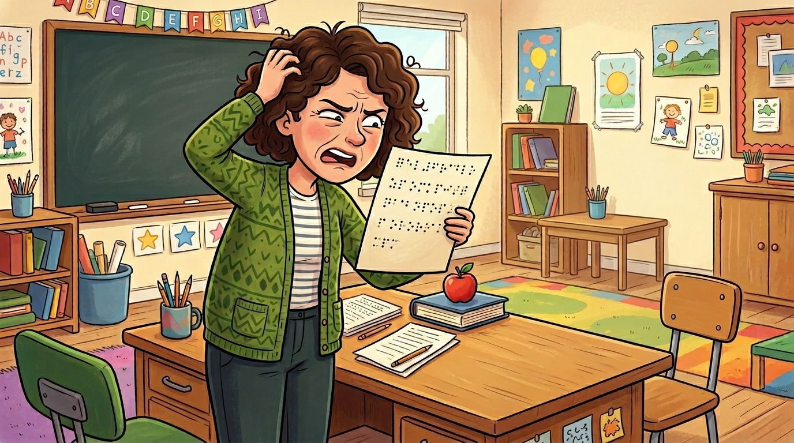
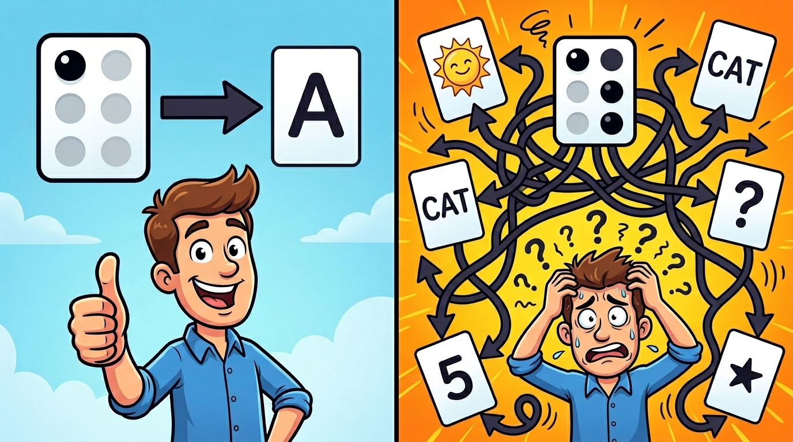

Why No App Can Read 90% of Real Braille
- 🏷 braille
- 🏷 ocr
- 🏷 accessibility
- 🏷 machine-learning
- 🏷 python
- 🏷 byt5
Here’s a scenario that plays out in classrooms every day. A visually impaired student finishes a written exam — on paper, in Braille, the way they’ve been taught. The teacher collects it. And then… stares at it. Because the teacher can’t read Braille.
This isn’t some edge case. Most teachers of visually impaired students cannot read Braille. They need a way to convert that embossed page into readable English text. So they reach for one of the Braille OCR apps on their phone. They snap a photo. And they get garbage.
“Eight of us scanned 28 documents multiple times… not one word was translated.”
That’s an actual app store review. And it’s not an outlier. I started digging into why these apps fail so consistently — and found a gap so big I decided to build a solution myself.

What Is Grade 2 Braille?
If you’ve ever seen Braille, you probably think of it as a one-to-one code. Each cell (a 2x3 grid of raised dots) maps to one letter. “A” is dot 1. “B” is dots 1-2. Simple lookup.
That’s Grade 1 Braille. And almost nobody uses it.
Within the first few months of learning Braille, students move to Grade 2 — contracted Braille. It’s like the shorthand version. Common words and letter combinations get compressed into fewer cells. “The” becomes a single cell. “And” becomes a single cell. “ing” at the end of a word? One cell.
There are over 180 contraction rules, and here’s what makes it genuinely hard: the same cell can mean completely different things depending on context.
Take the cell with dots 1-2 (⠃). It could mean:
- The letter “b” (when it’s part of a word)
- The word “but” (when it stands alone between spaces)
- Part of the contraction “bl” (in specific positions)
And it gets trickier. You can’t use the “can” contraction inside the word “Duncan.” The “th” contraction applies in “think” but not in “pothole.” These are position-dependent, pronunciation-dependent rules that require understanding the surrounding text.
90-95% of all real Braille documents use Grade 2. Every book, every magazine, every exam paper from a student past their first semester. Grade 1 is training wheels.

Why Every Existing App Fails
Here’s the punchline: every existing Braille OCR app only supports Grade 1.
That means they only work on 5-10% of real-world Braille. When a Grade 2 document hits a Grade 1 reader, the result isn’t just inaccurate — it’s incomprehensible.
A student writes: “The children will go shopping”
A Grade 1 reader sees something like: “t ch w g shop”
The contractions for “the,” “children,” “will,” and “go” get interpreted as individual letters, producing nonsense. The teacher is no closer to reading the exam.
And it’s not like the technology for generating Braille doesn’t exist. Libraries like liblouis can translate English text into Grade 2 Braille perfectly well. Screen readers use it every day. But going the other direction — from a Braille image back to English text — is where everything breaks down.
The tools exist to write Braille. Nothing exists to read it back from a photograph.
Braille OCR Is Two Problems, Not One

When I started researching this, the first insight that changed my approach was realizing that Braille OCR is really two separate problems — and one of them is already solved.
Stage 1: Cell Detection — Look at the image, find each Braille cell, determine which dots are raised. This is computer vision. And it’s a solved problem. Models like YOLOv8 achieve 98-99% accuracy on cell detection. Each Braille cell is a binary structure — six positions, each either raised or flat. That’s 2^6 = 64 possible patterns. Compared to handwriting recognition (infinite variation in how people write the letter “a”), detecting Braille dots is straightforward.
Stage 2: Interpretation — Take the sequence of detected cell patterns and figure out what English text they represent. For Grade 1, this is a simple lookup table. For Grade 2, this is an unsolved research problem.
┌─────────────┐
│ Image │
└──────┬──────┘
│
▼
┌─────────────────────────────┐
│ Stage 1: Cell Detection │
│ YOLOv8 — 98-99% accurate │
│ SOLVED │
└──────────┬──────────────────┘
│ Binary dot patterns
▼
┌─────────────────────────────┐
│ Stage 2: Interpretation │
│ Grade 1: Simple lookup │
│ Grade 2: UNSOLVED │
└──────────┬──────────────────┘
│
▼
┌────────┐
│ Text │
└────────┘
This separation matters for a practical reason: don’t re-solve what’s already solved. I didn’t need to build a better dot detector. I needed to build a better interpreter — one that understands Grade 2 contractions in context.
The architecture decision was to use existing YOLOv8 models for Stage 1, and focus all research effort on Stage 2: building a seq2seq model that takes a sequence of Unicode Braille characters and outputs English text.
The Challenge: No Data, No Models, No Baselines
Here’s what makes this a genuine research problem rather than an engineering exercise: there is no training data.
Every existing Braille dataset is Grade 1 only. Nobody has published a parallel corpus of Grade 2 Braille paired with English text. No model has been trained on Grade 2 interpretation. There are no benchmarks, no baselines, no published results to compare against.
The closest thing to a “baseline” is using liblouis in reverse — its back-translation mode. But liblouis was designed for forward translation (English to Braille), and its reverse mode produces garbled output:
Input: "Way down south where the jungle grows,"
Liblouis: "WAY D\2467/N S\12567/th where the JUNGLE GR\2467/S,"
Those backslash-number sequences are escape codes for contractions that liblouis can’t resolve in reverse. On a test set, liblouis back-translation achieves about 10% exact match with a character error rate of 0.26. Not even close to usable.
So I needed to create training data, choose a model architecture, and solve the tokenization problem for a script that no language model was designed to handle.
It took three attempts. The first two failed completely — 2.9% and 0% accuracy respectively. The third attempt, using a model called ByT5 that processes raw bytes instead of tokens, achieved 92.9% exact match on real-world Braille that the model had never seen during training.
That story — the failures, the breakthrough, and what made the difference — is Part 2.